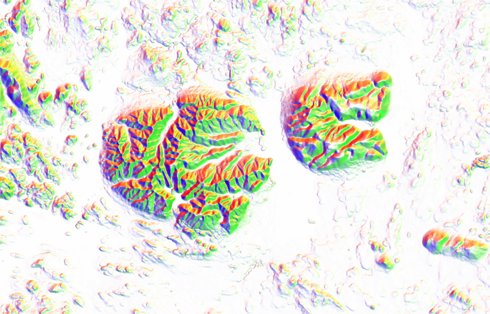
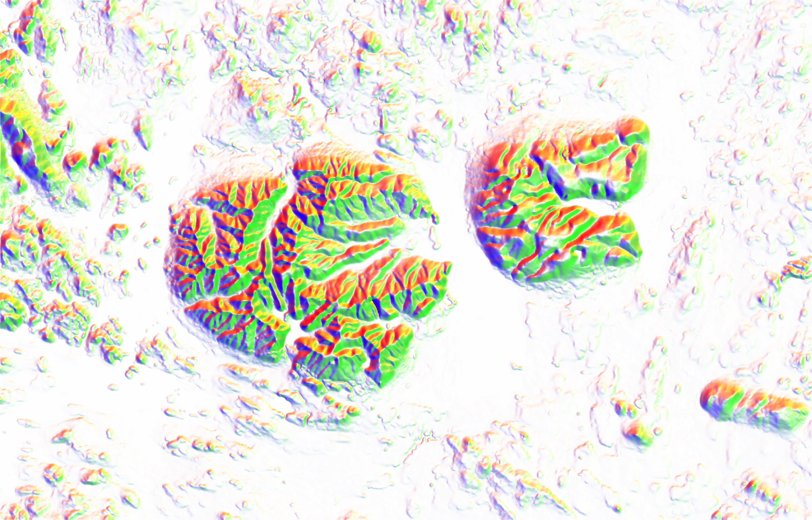

Глава 12 Трехмерные модели
12.2 Введение
Трехмерные модели местности могут использоваться в тех случаях, когда стандартное картографическое изображение недостаточно наглядно. Поскольку и построение трехмерных моделей и взаимодействие с ними сложнее, чем с обычными картами, они распространены не столь повсеместно.
12.3 Создание трёхмерной сцены
12.3.1 Освещение цифровой модели рельефа
Построение трехмерной модели обычно начинается с создания изображения рельефа. В качестве примера рассмотрим ЦМР на территорию в окрестностях Хибин и Ловозёрских тундр в Мурманской области. Чтобы построить изображение рельефа, для начана надо получить матрицу со значениями цвета RGB, а затем вывести ее на экран посредством plot_map(). Градиентная окраска по высоте получается функцией height_shade(), аналитическая отмывка — через sphere_shade():
dem = read_stars('data/dem_khibiny.tif')
elev = dem[[1]]
# ВАЖНО: в текущей версии rayshader оси матрицы не должны иметь названий
dim(elev) <- unname(dim(elev))
elev |>
height_shade() |>
plot_map()
elev |>
sphere_shade(zscale = 10) |>
plot_map()
dem_colors = colorRampPalette(c("darkolivegreen", "lightyellow", "orange", "firebrick", "white"))
elev |>
height_shade(texture = dem_colors(256)) |>
add_overlay(sphere_shade(elev, texture = 'bw', zscale=10), alphalayer=0.7) |>
plot_map()
Функция sphere_shade() имеет несколько встроенных палитр, которые позволяют раскрашивать поверхность в зависимости от восвещенности точки поверхности. В частности, она содержит стандартную черно-белую палитру, и четыре отмывки в швейцарском стиле Эдуарда Имгофа. Каждая палитра имеет, по сути, три цвета: фона, света и тени:
palettes = c('bw', 'desert', 'imhof1','imhof2','imhof3','imhof4', 'unicorn')
for (pal in palettes) {
elev |>
sphere_shade(texture = pal, zscale=10) |>
plot_map()
}


 

Добавим принудительно посчитанные тени:
elev |>
height_shade(texture = dem_colors(256)) |>
add_overlay(sphere_shade(elev, texture = 'bw', zscale=10), alphalayer=0.5) |>
add_shadow(lamb_shade(elev, zscale = 20), 0.1) |>
plot_map()
Рассеянный свет (ambient light) позволяет отделить долины от вершин хребтов:
elev |>
height_shade(texture = dem_colors(256)) |>
add_overlay(sphere_shade(elev, texture = 'bw', zscale=10), alphalayer=0.5) |>
add_shadow(lamb_shade(elev, zscale = 20), 0.1) |>
add_shadow(ambient_shade(elev), 0.1) %>%
plot_map()
Для построение трехмерной сцены вместо plot_map() необходимо использовать plot_3d(). При этом будет открыто интерактивное окно OpenGL, в котором вы сможете вращать созданную сцену:
elev |>
height_shade(texture = dem_colors(256)) |>
add_overlay(sphere_shade(elev, texture = 'bw', zscale=10), alphalayer=0.5) |>
add_shadow(lamb_shade(elev, zscale = 20), 0.1) |>
add_shadow(ambient_shade(elev), 0.1) |>
plot_3d(elev, zscale = 20, fov = 0,
theta = 135, zoom = 0.75, phi = 45,
windowsize = c(1400, 800))
# rgl::rglwidget(width = 800, height = 600)Чтобы сохранить текущий вид сцены, необходимо использовать функцию render_snapshot(). Для закрытия сцены используется функция rgl::rgl.close()

rgl::rgl.close()12.3.2 Векторные слои
Прочтем векторные данные:
db = 'data/khibiny.gpkg'
rivers = st_read(db, 'rivers', quiet = T)
lakes = st_read(db, 'lakes', quiet = T) |>
filter(CLASS_ID != 31300000)
roads_all = st_read(db, 'roads', quiet = T)
roads = filter(roads_all, CLASS_ID <= 62131000)
rails = st_read(db, 'rails', quiet = T)
forest = st_read(db, 'veg', quiet = T)
blocks = st_read(db, 'blocks', quiet = T)
poppol = st_read(db, 'poppol', quiet = T)Добавим их через оверлей объектов:
ext = raster::extent(st_bbox(dem))
elev |>
height_shade(texture = dem_colors(256)) |>
add_overlay(sphere_shade(elev, texture = 'bw', zscale=10), alphalayer=0.5) |>
add_shadow(lamb_shade(elev, zscale = 20), 0.1) |>
add_overlay(generate_line_overlay(rivers, linewidth = 2, color="steelblue4",
extent = ext,
heightmap = elev)) |>
add_overlay(generate_polygon_overlay(lakes, linewidth = 1,
palette = 'azure',
linecolor = 'steelblue4',
extent = ext,
heightmap = elev)) |>
plot_map()
Визуализируем в 3D:
elev |>
height_shade(texture = dem_colors(256)) |>
add_overlay(sphere_shade(elev, texture = 'bw', zscale=10), alphalayer=0.5) |>
add_shadow(lamb_shade(elev, zscale = 20), 0.1) |>
add_overlay(generate_line_overlay(rivers, linewidth = 2, color="steelblue4",
extent = ext,
heightmap = elev)) |>
add_overlay(generate_polygon_overlay(lakes, linewidth = 1,
palette = 'azure',
linecolor = 'steelblue4',
extent = ext,
heightmap = elev)) |>
plot_3d(elev, zscale = 20, fov = 0,
theta = 135, zoom = 0.75, phi = 45,
windowsize = c(1400, 800))
Sys.sleep(0.2)
render_snapshot()
rgl::rgl.close()Чтобы приблизить изображение, повернуть, изменить угол наклона и т.д., используйте параметры функции plot_3d():
elev |>
height_shade(texture = dem_colors(256)) |>
add_overlay(sphere_shade(elev, texture = 'bw', zscale=10), alphalayer=0.5) |>
add_shadow(lamb_shade(elev, zscale = 20), 0.1) |>
add_overlay(generate_line_overlay(rivers, linewidth = 2, color="steelblue4",
extent = ext,
heightmap = elev)) |>
add_overlay(generate_polygon_overlay(lakes, linewidth = 1,
palette = 'azure',
linecolor = 'steelblue4',
extent = ext,
heightmap = elev)) |>
plot_3d(elev, zscale = 50, fov = 0,
theta = 80, zoom = 0.25, phi = 35,
windowsize = c(1400, 800))
Sys.sleep(0.2)
render_snapshot()
rgl::rgl.close()Расширим состав визуализируемых объектов:
plt = elev |>
height_shade(texture = dem_colors(256)) |>
add_overlay(sphere_shade(elev, texture = 'bw', zscale=10), alphalayer=0.5) |>
add_shadow(lamb_shade(elev, zscale = 20), 0.1) |>
add_overlay(generate_polygon_overlay(poppol, linewidth = 1,
palette = 'orange',
linecolor = 'black',
extent = ext,
heightmap = elev)) |>
add_overlay(generate_line_overlay(rivers, linewidth = 2, color="steelblue4",
extent = ext,
heightmap = elev)) |>
add_overlay(generate_polygon_overlay(lakes, linewidth = 1,
palette = 'azure',
linecolor = 'steelblue4',
extent = ext,
heightmap = elev)) |>
add_overlay(generate_line_overlay(roads, linewidth = 4, color="black",
extent = ext,
heightmap = elev)) |>
add_overlay(generate_line_overlay(roads, linewidth = 2, color="lightyellow",
extent = ext,
heightmap = elev)) |>
add_overlay(generate_line_overlay(rails, linewidth = 3, color="black",
extent = ext,
heightmap = elev))
plot_map(plt)
plot_3d(plt, elev, zscale = 30, fov = 0,
theta = -45, zoom = 0.25, phi = 30,
windowsize = c(1400, 800))
Sys.sleep(0.2)
render_snapshot()
rgl::rgl.close()12.3.3 Подписи
Для размещения подписей следует использовать функцию generate_label_overlay():
popmajor = poppol |>
filter(CLASS_ID < 41300000) |>
st_centroid()
popminor= poppol |>
filter(CLASS_ID == 41300000) |>
st_centroid()
plt_lbl = plt |>
add_overlay(generate_point_overlay(popmajor, size = 8, extent = ext, color = "black", pch = 19,
heightmap = elev)) |>
add_overlay(generate_point_overlay(popmajor, size = 3, extent = ext, color = "white", pch = 19,
heightmap = elev)) |>
add_overlay(generate_label_overlay(labels = popmajor,
data_label_column = 'NAME',
extent = ext, text_size = 2, color = "black", font=2,
halo_color = "white", halo_expand = 2, point_size = 0,
seed=1, heightmap = elev))
plot_map(plt_lbl)
plot_3d(plt_lbl, elev, zscale = 30, fov = 0,
theta = -45, zoom = 0.5, phi = 30,
windowsize = c(1400, 800))
Sys.sleep(0.2)
render_snapshot()
rgl::rgl.close()Как видно, оверлей подписей выглядит не очень в трехмерноме режиме. В этом случае необходимо эти подписи наносить уже после того как трехмерный режим активирован:
plot_3d(plt, elev, zscale = 30, fov = 0,
theta = -45, zoom = 0.5, phi = 35,
windowsize = c(1400, 800))
for (name in popmajor$NAME) {
pop = filter(popmajor, NAME == name)
render_label(elev, lat = st_coordinates(pop)[, 2], lon = st_coordinates(pop)[, 1],
text = name, altitude = 1000, zscale=30, textsize = 1.75, linewidth = 4,
extent = ext, textcolor = "turquoise2", linecolor="turquoise2",
relativez = TRUE)
}
Sys.sleep(0.2)
render_snapshot()
rgl::rgl.close()12.4 Анимация трёхмерной сцены
Анимация с помощью пакета rayshader осуществляется покадрово. Для этого необходимо задать последовательность параметров камеры, каждый из которых будет определять кадр видеофильма, и определить эти параметры в функции render_movie().
12.4.1 Вращение относительно точки
Наиболее простой спобособ визуализации сцены — вращение относительно фиксированной точки. В этом случае необходимо менять только угол поворота камеры. По умолчанию render_movie() создает 12-секундный ролик с частотой 30 кадров в секунду (т.е. 360 кадров всего). Именно такой результат будет получен, если вызывать ее без параметров:
plot_3d(plt, elev, zscale = 30, fov = 0,
theta = -45, zoom = 0.5,
windowsize = c(1400, 800))
for (name in popmajor$NAME) {
pop = filter(popmajor, NAME == name)
render_label(elev, lat = st_coordinates(pop)[, 2], lon = st_coordinates(pop)[, 1],
text = name, altitude = 1000, zscale=30, textsize = 1.75, linewidth = 4,
extent = ext, textcolor = "turquoise2", linecolor="turquoise2",
relativez = TRUE)
}
render_movie(filename = 'images/khibiny_rotate.gif')
12.4.2 Облёт по траектории
Для того чтобы территорию облететь по заданной траектории, необходимо эту траекторию создать. Проще всего такую задачу решить в настольной ГИС (ArcGIS, QGIS), оцифровав необходимую линию. Также можно создать объект через редактор пакета mapedit. Подгрузим готовую траекторию из базы данных и посмотрим на ее контур:
traj_line = st_read(db, 'trajectory')
## Reading layer `trajectory' from data source
## `/Users/tsamsonov/GitHub/r-geo-course/data/khibiny.gpkg' using driver `GPKG'
## Simple feature collection with 1 feature and 0 fields
## Geometry type: LINESTRING
## Dimension: XY
## Bounding box: xmin: 482251.7 ymin: 7473232 xmax: 593004.8 ymax: 7545685
## Projected CRS: WGS 84 / UTM zone 36N
n_frames = 360
traj_pts = st_sample(traj_line, size = n_frames, type = 'regular') |>
st_cast('POINT')
plt_lbl |>
add_overlay(generate_line_overlay(traj_line, linewidth = 10, extent = ext, heightmap = elev, color = 'cyan'), 0.8) |>
add_overlay(generate_point_overlay(traj_pts, size = 3, extent = ext, heightmap = elev, color = 'orangered'), 1) |>
plot_map()Готовой функции для облета по траектории в rayshader пока что нет, поэтому необходимо соорудить эту функциональность самим. Рендер будем выполнять покадрово, обрезая растр таким образом чтобы текущая точка траектории оказывалась в его середине:
library(magick)
anim_wd = 'anim'
dir.create(anim_wd)
output_gif = "images/khibiny_traj.gif"
img_frames <- file.path(
anim_wd,
paste0("anim_", formatC(seq_len(n_frames), width = 3, flag = "0"), ".png")
)
coords = st_coordinates(traj_pts)
for (i in seq_along(img_frames)) {
box = st_buffer(traj_pts[i], 50000) |> st_bbox()
elev_crop = dem[box][[1]]
dim(elev_crop) = unname(dim(elev_crop))
ext_crop = raster::extent(box)
plt = elev_crop |>
height_shade(texture = dem_colors(256)) |>
add_overlay(sphere_shade(elev_crop, texture = 'bw', zscale=10), alphalayer=0.5) |>
add_shadow(lamb_shade(elev_crop, zscale = 20), 0.1)
dx = coords[i+1, 1] - coords[i, 1]
dy = coords[i+1, 2] - coords[i, 2]
A = 180 * atan2(dx, dy) / pi
plot_3d(plt, elev_crop, zscale = 30, zoom = 0.5, theta = -A, phi = 20, windowsize = c(1400, 800))
Sys.sleep(0.2)
render_snapshot(img_frames[i])
rgl::clear3d()
}
rgl::rgl.close()
# Create gif
image_write_gif(image_read(img_frames[-360]),
path = output_gif,
delay = 6/n_frames)
12.5 Контрольные вопросы и упражнения
12.5.2 Упражнения
- Скачайте базу данных и цифровую модель рельефа на территорию Сатинского полигона МГУ. Постройте на их основе трехмерную модель местности и выполните ее круговую анимацию.
Самсонов Т.Е. Визуализация и анализ географических данных на языке R. М.: Географический факультет МГУ, lubridate::year(Sys.Date()). DOI: 10.5281/zenodo.901911
|